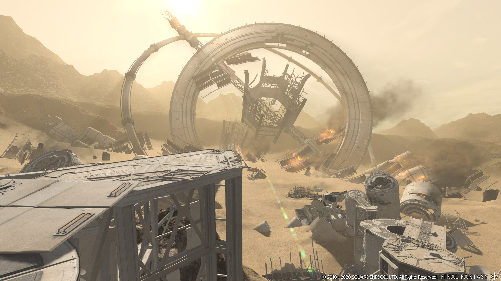

バトルコンテンツ
FF14は、バトルコンテンツが充実していて
ランダムの4人 一組で
挑む「ID(インスタンスダンジョン)」
８人１組で強敵と戦う「討滅戦」
８人１組の３グループで戦う「アライアンスレイド」等他
にも様々なコンテンツがあります。
ID
ID(インスタンスダンジョン)は、ストーリーを進めていると挑むことの出来るダンジョンです。
IDは、基本タンク1,DPS2,ヒーラー1の構成で挑みます。
現在IDは、全てで90個存在して、それぞれ違う敵、違うステージ、違うギミック、違う装備が
あり
プレイヤーは、様々なダンジョンを攻略することになります。
討滅戦
討滅戦は、8人1組(タンク2人、DPS4人、ヒーラー2人)で、強大な敵に挑む
コンテンツです。
討滅戦がFF14のメインコンテンツで、ストーリーを進め
ていくと挑めるようになります。現在、IDほどではないが、たくさんの討
滅戦があり、過去のFF作品のキャラクターが討滅戦のボスとして、登場す
ることもあります。
討滅戦には、高難度コンテンツとして、「極」という難易度があります。
極では、ボスがモチーフの装備を獲得できる可能性があり、装備を求め、極
に挑戦するプレイヤーがたくさんいます。
ノーマルレイド
レイドは、討滅戦と同じ8人1組(タンク2人、DPS4人、ヒーラー2人)で、強大
な敵に挑むコンテンツですが、討滅戦と違いメインストーリーでは解放出来な
いサブコンテンツのような立ち位置です。
討滅戦との違いは、レイド自体にそれぞれのストーリーがあり、討滅戦は敵を一体倒せればクリアですが、レイドは1層から4層まであり、すべてのボスを
倒して初めてクリアになります。
高難度コンテンツとして、「零式」という難易度があり、極と比べて難易度
が跳ね上がる代わりに、強力な装備を獲得することが出来ます。
アライアンスレイド

アライアンスダンジョンは、8人1組(タンク1人、DPS5人、ヒーラー1人)が3グル
ープの24人で挑むコンテンツです。
他のコンテンツと比べて人数が多いので、その分敵も大きく、強力になっていきます。
24人3チームごとに協力してギミックをこなす必要があるので、他のコンテンツでは
やったことのないプレイが出来ます。
アライアンスレイドは、テーマとステージが大きく、コラボもやっており、
「NieR:Automata」がモチーフのアライアンスがあり、次の拡張パッケージでは
FF11コラボのアライアンスレイドが来ます。
PvP
PvPには、複数のコンテンツがあり、5v5で戦うクリスタルコンフリクト・3チーム
最大72人の三つ巴のフロントライン・24v24のライバルウィングスがあり
今でも
アップデードを続けています。PvPには専用のランクがあり、PvPしかやらないプレ
イヤーも存在します。
クリスタルコンフリクトには、年に一回公式の大会が開かれており、多額の賞金
をもらうこともできます。
オフラインイベントを日本で開催する年は、決勝をオフ
ラインでやったりとPvPにも力を入れています。
.webp)